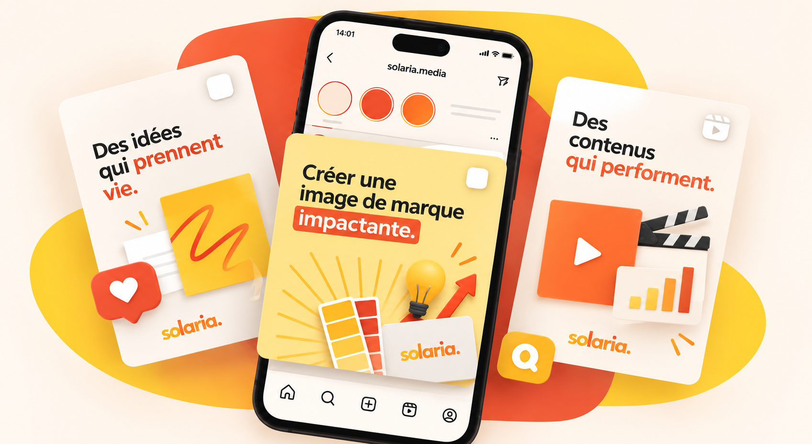
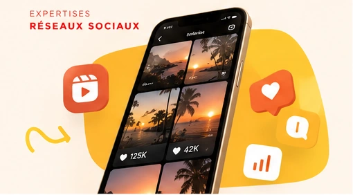
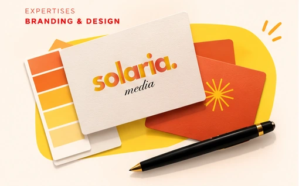
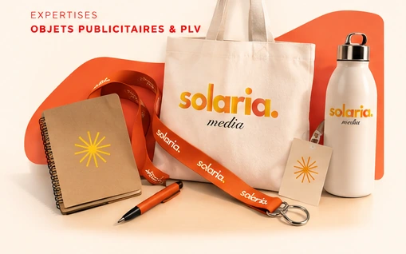
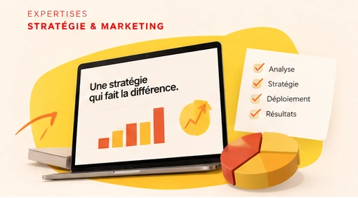
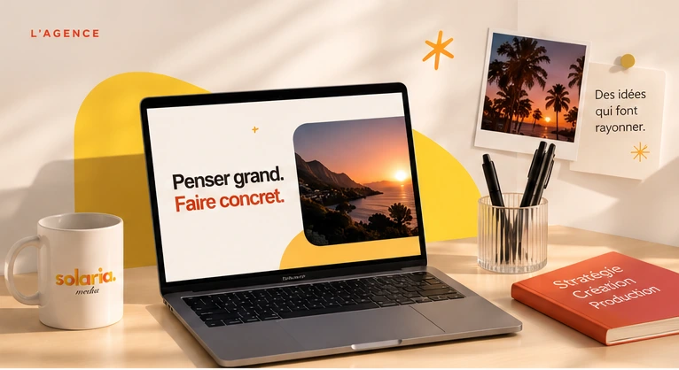
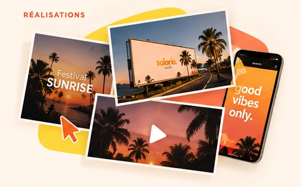

Comprendre
Identifier les enjeux de votre activité, avant de définir les solutions.
Solaria Media accompagne les entreprises de la réflexion stratégique à la réalisation de leurs projets de communication.

Univers visuel Solaria MediaUne vision d’ensemble.
Des actions concrètes.
Nos expertises
Quatre expertises complémentaires, mobilisées selon vos objectifs.

Stratégie, contenus, réseaux sociaux et campagnes Meta Ads.

Une image de marque cohérente, pensée pour tous vos supports.

De la conception graphique à la fabrication et à la livraison.

Des dispositifs coordonnés pour faire vivre vos actions commerciales.

L’esprit Solaria
Du premier échange à la mise en œuvre, Solaria Media réunit les compétences nécessaires pour donner de la cohérence à chaque prise de parole de votre entreprise.

De l’idée aux supports
Identité, campagne, signalétique ou contenu : chaque format a un rôle à jouer pour faire rayonner une marque.
Découvrir les univers visuelsL’agence
Solaria Media est une agence de communication et de marketing basée à Saint-Denis, La Réunion. Nous accompagnons les professionnels dans la conception, la coordination et le déploiement de leurs projets.
Découvrir notre approcheNotre mission
Nous intervenons aussi bien sur la stratégie que sur sa réalisation opérationnelle. Notre rôle : relier conseil, créativité, production et coordination pour apporter des réponses adaptées aux enjeux de chaque entreprise.
Cette approche est personnalisée, pragmatique et orientée résultats.
Une façon de travailler qui simplifie la communication et donne de la cohérence à chaque action.
Identifier les enjeux de votre activité, avant de définir les solutions.
Créer des concepts et des supports qui correspondent à votre marque.
Coordonner la production et la mise en œuvre des actions retenues.
Construire une relation suivie, avec réactivité et transparence.
À qui s’adresse Solaria ?
Notre ancrage
Basée à Saint-Denis, l’agence intervient à La Réunion, dans l’Océan Indien et envisage des projets en France métropolitaine.
Nos expertises
Une approche complète, quatre domaines complémentaires. Choisissez l’expertise qui correspond à votre besoin.
Nous construisons une présence digitale adaptée à vos objectifs, de la ligne éditoriale à l’analyse des performances.
Nous créons et déclinons l’univers graphique de votre marque pour renforcer sa cohérence sur tous ses supports.
Nous coordonnons la fabrication de supports physiques adaptés à votre marque, à vos événements et à vos points de vente.
Nous concevons et coordonnons des campagnes pour soutenir vos lancements, votre notoriété et vos objectifs commerciaux.
L’univers Solaria
Du contenu digital aux objets publicitaires, découvrez les univers visuels qui traduisent les domaines d’expertise de Solaria Media.
Projets & études de cas
Cet espace pourra accueillir les projets clients de l’agence : contexte, objectifs, conception et déploiement, dès que les contenus seront disponibles et validés.
Contact
Vous souhaitez développer votre communication, renforcer votre identité ou préparer une campagne ? Présentez-nous votre projet.
Quelques informations pour comprendre votre demande.
Vous pouvez aussi découvrir l’approche et les domaines d’expertise de Solaria Media.
Notre agence ↗Nos expertises ↗